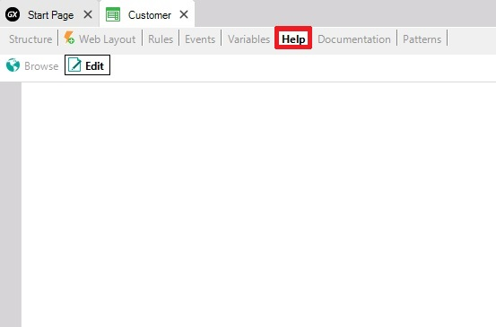

This section of each GeneXus object allows you to describe the help text the end-users will be able to see at runtime.
You can access this by selecting the Help tab of each GeneXus object.

| Backlinks | |
| Toc:GeneXus - Table of contents | Category:Procedure object |
| Category:Transaction object |